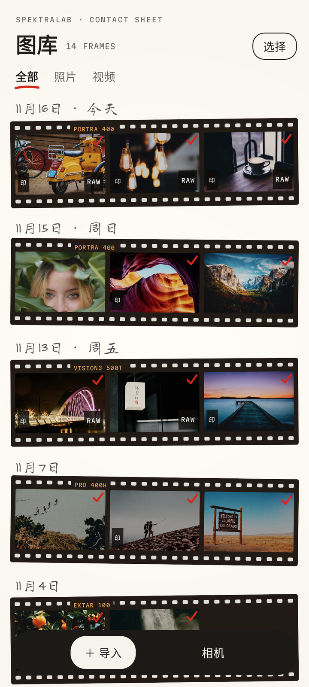
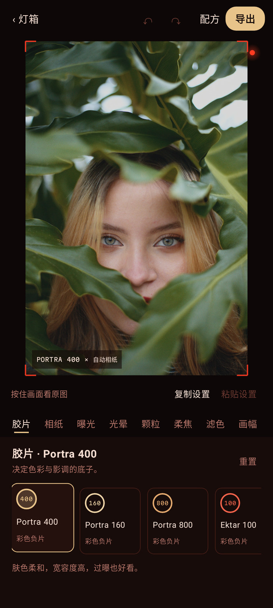
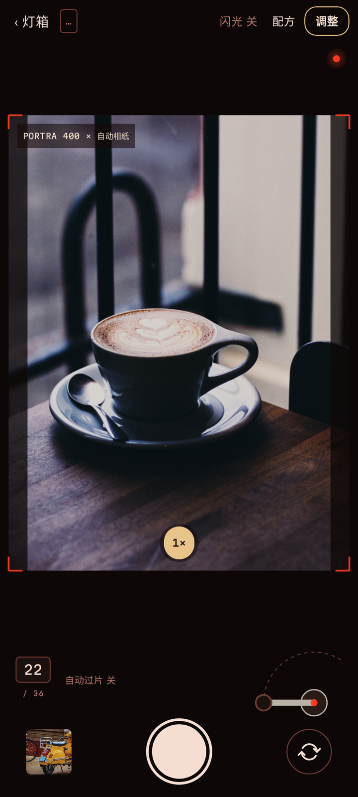
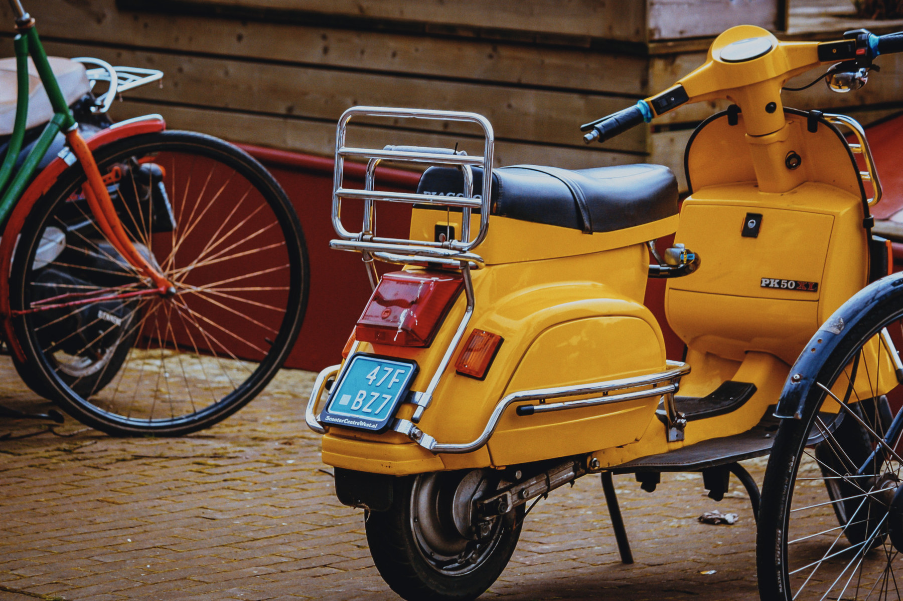
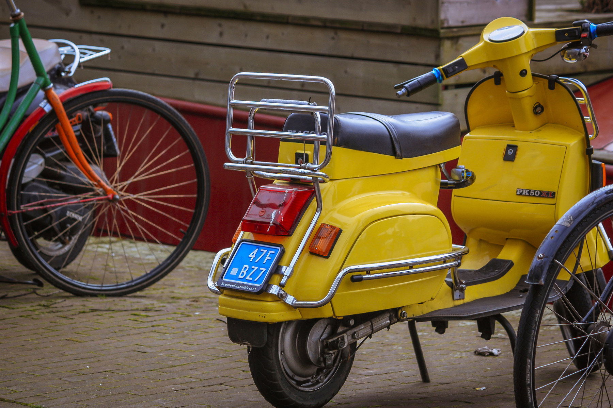
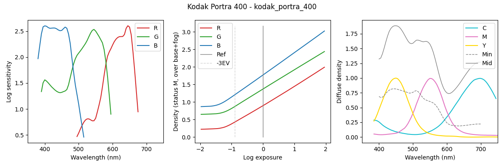
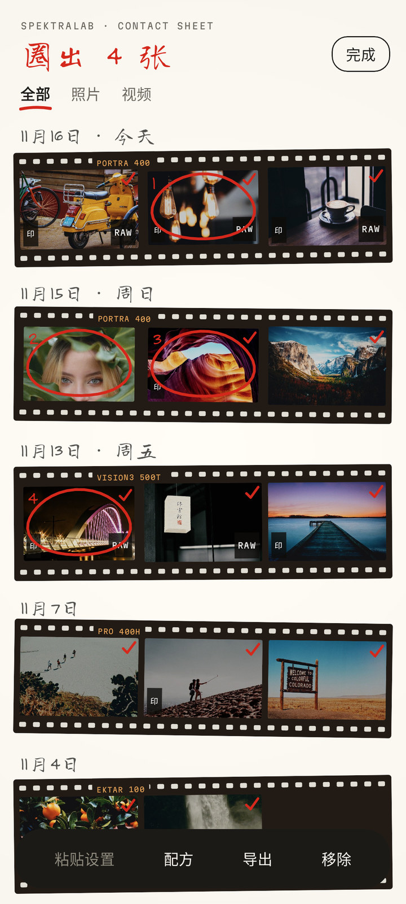
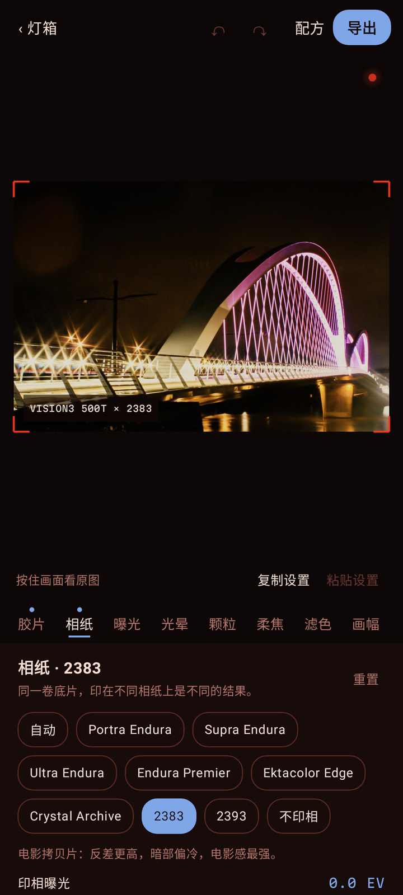
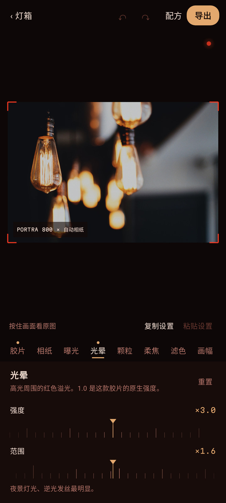
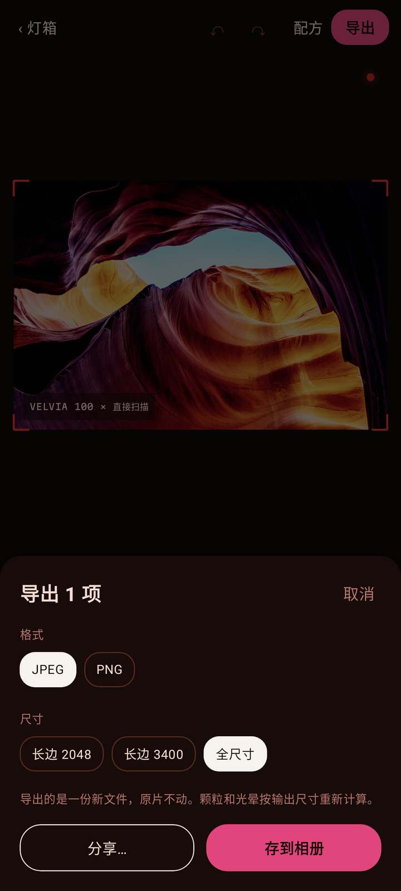

灯箱
照片、RAW（DNG）和视频摊在带齿孔的底片条上。红蜡笔圈选，批量粘贴设置、套用配方、冲印。
光谱胶片模拟 · 安卓原生
胶片的颜色不是调出来的，是算出来的。SpektraLab 把开源项目 spektrafilm 的光谱胶片模拟移植到了手机 GPU 上：负片曝光、显影、放大机印相、相纸、扫描，一步不少。
Film modeling powered by spektrafilm by Andrea Volpato.





拖动对比 · 右侧为本应用的胶片引擎渲染，未做其他调色
起点
spektrafilm 是 Andrea Volpato 发起的开源项目：从胶片厂商数据表里的光谱感光度、特性曲线、染料吸收光谱出发，端到端地用物理模型模拟彩色胶片的拍摄、印相与扫描，而不是套一张凭感觉调的 LUT。
它是一个桌面上的 Python 参考实现。SpektraLab 把它的运行时移植成 Kotlin + OpenGL ES，并逐级对照原版验证：输出平均误差 0.04%（sRGB），胶片密度误差小于 0.001。

功能
照片、RAW（DNG）和视频摊在带齿孔的底片条上。红蜡笔圈选，批量粘贴设置、套用配方、冲印。
实时预览，双指放大到 100% 也走完整管线。按住看原图，撤销 / 重做，刻度尺滑杆。
乳剂散射与片基反射的光晕、逐层的随机颗粒、四种柔焦镜，全部按 spektrafilm 的公式实时计算。
实时胶片取景，原片存 RAW。多帧合成让暗处更干净；还有一支要自己扳的过片扳手。
导入视频，实时预览播放，逐帧重新生成颗粒导出，1080p / 4K，音轨原样保留。
导出 JPEG / PNG，大图分块渲染；成片带上原片的拍摄信息。后台排队，失败可重试。




界面截图由应用自身的界面代码渲染，画面由应用的胶片引擎渲染。
胶片 × 相纸
Portra 160 / 400 / 800 · Ektar 100 · Gold 200 · UltraMax 400 · C200 · Pro 400H · X-TRA 400
Vision3 50D / 250D / 200T / 500T · Verita 200D
Velvia 100 · Provia 100F · Ektachrome 100 · Kodachrome 64
Portra Endura · Supra Endura · Ultra Endura · Endura Premier · Ektacolor Edge · Crystal Archive · 2383 · 2393
90 秒看完
需要 Android 10（API 29）及以上，GPU 支持 OpenGL ES 3.0。
安装包不经应用商店分发，安装时系统会提示“允许安装未知来源应用”。